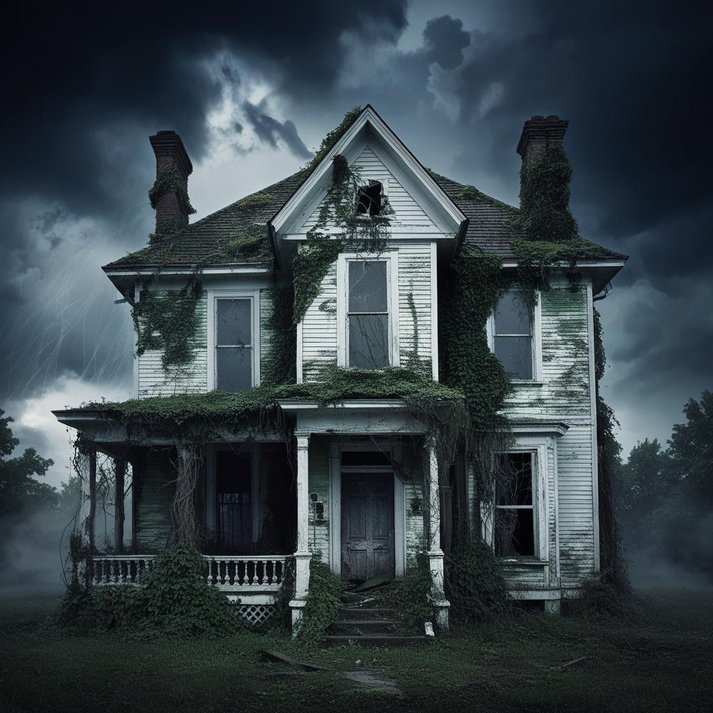

La Casa del Vacío
Explora la historia y la atmósfera de la casa donde Logan enfrentó sus demonios:
La casa, una antigua construcción con sombras que susurran, se ha mantenido en pie a través de los años, reflejando los miedos y anhelos de quienes han cruzado su umbral. Cada habitación guarda secretos, y cada pasillo cuenta una historia. Al recorrer sus espacios, se siente la presencia de Logan, atrapado entre el eco del silencio y el clamor de su propia soledad.